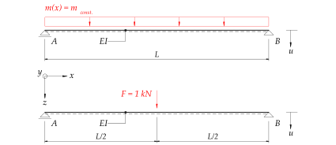
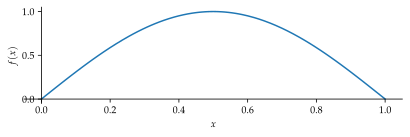
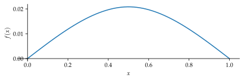
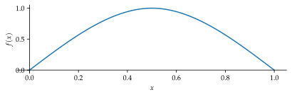
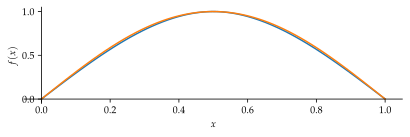
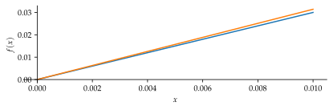

%run style_and_packages.ipynb3 Beispiel: Einfacher Balken mit konstanter Masse
3.1 Aufgabenstellung
Das System in Abbildung 3.1 zeigt einen einfachen Balken mit einer konstanten Streckenlast belastet.

Gesucht:
- Eigenkreisfrequenz \(\omega_1\) mit Hilfe der analytischen Formfunktion Gleichung 3.1 \[ \Psi(x) = \sin{\frac{\pi x}{L}} \tag{3.1}\]
- Eigenkreisfrequenz \(\omega_1\) mit Hilfe der Biegelinie
Gegeben:
- Länge des Balkens \(L\)
- Verteilte Masse ist konstant \(m_{const}\)
- Exakte Lösung der Eigenkreisfrequenz gemäss Gleichung 3.2
\[ \omega_1 = \pi^2 \cdot \sqrt{\frac{E\cdot I}{m_{const}\cdot L^4}} \tag{3.2}\]
3.2 Musterlösung
3.2.1 Analytische Formfunktion
Als Formfunktion wird eine Sinus-Funktion gewählt. Dabei ist sicherzustellen, dass die Formfunktion normiert ist. Das heisst, der maximale Wert der Funktion ist \(1\). Dazu sind die kinematischen Randbedingungen einzuhalten. Entsprechend des Systems in Abbildung 3.1 muss die Verformung bei den Lagern null sein. Die gewählte Formfunktion bedingt keine weitere Anpassung zur Normierung.
x,L = sp.symbols('x L', positive=True)
Psi_x = sp.sin(sp.pi*x/L)
render.eq_display('Psi(x)',Psi_x)\[\begin{equation}\Psi{\left(x \right)} = \sin{\left(\frac{\pi x}{L} \right)}\end{equation}\]
plot_frei = sp.plot(Psi_x.subs(L,1),(x,0,1),size=(5.9,2))
3.2.1.1 Rayleigh - Quotient
Der Rayleigh-Quotient ist eine Energiebetrachtung. Er setzt die potenzielle, maximale Energie \(E_{pot,max}\) zur kinetischen, maximalen Energie \(E_{kin,max}\) ins Verhältnis. Daraus lässt sich die Kreisfrequenz \(\omega_n\) herauslösen. Die Lösung der Integrale wird hier mit einer Mathematik-Software durchgeführt. Die einzelnen Teilschritte werden nicht aufgeführt. \[ E_{pot,max} = E_{kin,max} \tag{3.3}\]
\[ \omega_1^2 = \frac{\int_0^L EI[u''(x)]^2 dx}{\int_0^L m_{const.}[u(x)]^2 dx} \tag{3.4}\]
Dies lässt sich mit entsprechender Formfunktion schreiben:
\[ \omega_1^2 = \frac{\int_0^L EI[\Psi''(x)]^2 dx}{\int_0^L m_{const.}[\Psi(x)]^2 dx} \tag{3.5}\]
Durch die Ermittlung der zweiten Ableitung der Formfunktion:
Psi_x_diff_1 = sp.diff(Psi_x, x)
Psi_x_diff_2 = sp.diff(Psi_x, x,x)
render.eq_display('Psi(x)', Psi_x,
'Derivative(Psi(x),x)', Psi_x_diff_1,
'Derivative(Psi(x),x,x)', Psi_x_diff_2,)\[\begin{equation}\Psi{\left(x \right)} = \sin{\left(\frac{\pi x}{L} \right)}\end{equation}\]
\[\begin{equation}\frac{d}{d x} \Psi{\left(x \right)} = \frac{\pi \cos{\left(\frac{\pi x}{L} \right)}}{L}\end{equation}\]
\[\begin{equation}\frac{d^{2}}{d x^{2}} \Psi{\left(x \right)} = - \frac{\pi^{2} \sin{\left(\frac{\pi x}{L} \right)}}{L^{2}}\end{equation}\]
Diese eingesetzt in die Gleichung 3.5:
E, I, m_const = sp.symbols('E I m_const',real=True)
omega_1 = sp.sqrt(sp.integrate(E*I*sp.diff(Psi_x,x,2)**2, (x,0,L)) /sp.integrate(m_const*Psi_x**2, (x,0,L)) )
render.eq_display('omega_1', omega_1.doit())\[\begin{equation}\omega_{1} = \frac{\pi^{2} \sqrt{\frac{E I}{m_{const}}}}{L^{2}}\end{equation}\]
Dies entspricht der exakten Lösung Gleichung 3.2! Grund dafür ist, dass die gewählte Formfunktion mit der dynamischen Deformation übereinstimmt.
3.2.2 Formfunktion aus Biegelinie
Die Biegelinie für das System in Abbildung 3.1 ist folgend beschrieben. Beachte dabei, dass die Deformation nach “unten” positiv definiert ist. Die Funktion kann aus Hilfswerken entnommen werden.
a, b,F = sp.symbols('a b F')
b = L/2
a = b
zeta = x/L
beta = b/L
alpha = a/L
w_x_biegelinie_1 = (F*L**3 / 6 *(beta * zeta*(-zeta**2-beta**2+1)))/(E*I)
w_x_biegelinie_2 = sp.simplify((F*L**3 / 6 *(beta * zeta*(-zeta**2-beta**2+1)+(zeta-alpha)**3)))/(E*I)
w_x_biegelinie = sp.Piecewise((w_x_biegelinie_1,x<=a), (w_x_biegelinie_2,x>a))
render.eq_display('w(x)', w_x_biegelinie)
\[\begin{equation}w{\left(x \right)} = \begin{cases} \frac{F L^{2} x \left(\frac{3}{4} - \frac{x^{2}}{L^{2}}\right)}{12 E I} & \text{for}\: x \leq \frac{L}{2} \\\frac{F \left(x \left(3 L^{2} - 4 x^{2}\right) - \left(L - 2 x\right)^{3}\right)}{48 E I} & \text{otherwise} \end{cases}\end{equation}\]
plot_biege = sp.plot(w_x_biegelinie.subs([(L,1),(F,1),(E,1),(I,1)]), (x,0,1),size=(5.9,2))
3.2.2.1 Normierung
Es ist ersichtlich, dass die Formfunktion noch eine Normierung benötigt. Dazu wird der Maximalwert zu \(1\) gesetzt. Die Randbedingungen sind bereits erfüllt.
w_x_biegelinie_norm = w_x_biegelinie * w_x_biegelinie.subs(x,L/2)**-1
render.eq_display('w_norm(x)', w_x_biegelinie_norm)\[\begin{equation}w_{norm}{\left(x \right)} = \frac{48 E I \left(\begin{cases} \frac{F L^{2} x \left(\frac{3}{4} - \frac{x^{2}}{L^{2}}\right)}{12 E I} & \text{for}\: x \leq \frac{L}{2} \\\frac{F \left(x \left(3 L^{2} - 4 x^{2}\right) - \left(L - 2 x\right)^{3}\right)}{48 E I} & \text{otherwise} \end{cases}\right)}{F L^{3}}\end{equation}\]
plot_norm_biege = sp.plot(w_x_biegelinie_norm.subs([(L,1),(F,1),(E,1),(I,1)]), (x,0,1),size=(5.9,2))
3.2.2.2 Rayleigh - Quotient
Durch das Einsetzen der bestimmten Formfunktion aus der Biegelinie in Gleichung 3.5 kann die Eigenkreisfrequenz ermittelt werden.
omega_1_biege = sp.sqrt(sp.integrate(E*I*sp.diff(w_x_biegelinie_norm,x,2)**2, (x,0,L)) /sp.integrate(m_const*w_x_biegelinie_norm**2, (x,0,L)) )
render.eq_display('omega_1_biege', omega_1_biege.evalf(3))\[\begin{equation}\omega_{1 biege} = \frac{9.94 \left(\frac{E I}{m_{const}}\right)^{0.5}}{L^{2}}\end{equation}\]
3.2.3 Vergleich beider Lösungen
Ein Vergleich der Eigenkreisfrequenz aus der Biegeform mit der exakten Lösung aus Gleichung 3.2 zeigt eine minimale Abweichung.
render.eq_display(sp.Symbol('\\text{Abweichung}'), ((omega_1_biege / omega_1-1)*100).evalf(2)*unit.percent)\[\begin{equation}\text{Abweichung} = 0.72 \%\end{equation}\]
plot_vergleich = sp.plot(w_x_biegelinie_norm.subs([(L,1),(F,1),(E,1),(I,1)]),Psi_x.subs(L,1), (x,0,1),size=(5.9,2))
Um die minimale Abweichung offensichtlicher darzustellen ist in Abbildung 3.6 ein Teilbereich dargestellt.
plot_vergleich = sp.plot(w_x_biegelinie_norm.subs([(L,1),(F,1),(E,1),(I,1)]),Psi_x.subs(L,1), (x,0,0.01),size=(5.9,2))